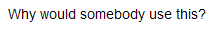

The <blink> HTML element is a non-standard element which causes the enclosed text to flash slowly.
<blink> element.This element is unsupported and thus implements the {{domxref("HTMLUnknownElement")}} interface.
<blink>Why would somebody use this?</blink>

This element is non-standard and not part of any specification. If you don't believe us, see for yourself in the HTML spec.
If you really do need a polyfill, then you can use the following CSS polyfill. Works in IE10+.
blink {
-webkit-animation: 2s linear infinite condemned_blink_effect; /* for Safari 4.0 - 8.0 */
animation: 2s linear infinite condemned_blink_effect;
}
/* for Safari 4.0 - 8.0 */
@-webkit-keyframes condemned_blink_effect {
0% {
visibility: hidden;
}
50% {
visibility: hidden;
}
100% {
visibility: visible;
}
}
@keyframes condemned_blink_effect {
0% {
visibility: hidden;
}
50% {
visibility: hidden;
}
100% {
visibility: visible;
}
}
{{Specifications}}
{{Compat}}
<blink> element.